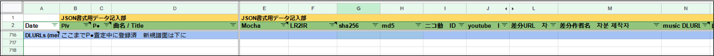
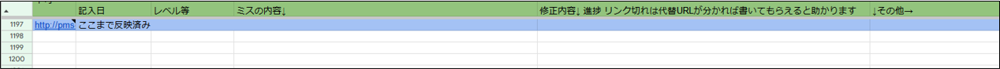
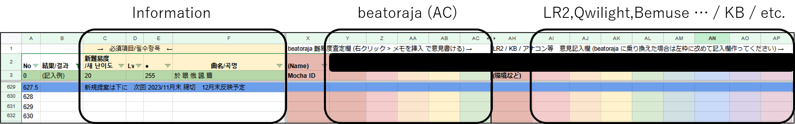

About - PMS Database について
PMS Database のコンテンツに関する諸説明、および細かい仕様に関しての備忘録です。
(2023/07) 発狂PMS難易度表の更新再開にあわせ、一部のルールを見直しました。更新部分は青色でハイライトしています。
PMS Database の登録対象となるPMS差分について (クリックで開閉)
PMS Database では、基本的に全てのPMS差分を Normal Records / Insane Records (本表) に振り分けて登録しています。
一方、Excluded Records (隔離表) は主にデータ整理を目的としており、本表で取り扱わないPMS差分 (下記ガイドライン参照) と、LR2IR に記録がある全ての差分をリストしています。
PMS Database に全数統合済の難易度表
2017/06 以降、PMS Database は次の内容を全て統合しています。
■ 発狂PMS難易度表(Lv46～99) … 2017/04 更新停止時 + 2023/07 更新再開後 (同期中)
■ 発狂PMS表外案内所(Lv46～99) … 2017/04 更新停止時
■ BOFPMS差分企画難易度表(Lv1～99) … 初開催(2013) ～ 最終開催(2016)
■ 発狂PMS見てない難易度(Lv46～99) … 2017/04 ～ 2019 発狂PMS難易度表 更新停止以降の新しい差分をまとめていた暫定表
■ PMS通常難易度表(Lv1～99) … 秘密氏作成 2014-15頃? 更新停止
■ Links に記入されている差分サイト・難易度表サイトで公開されているPMS差分 … 最終確認 : 2017/06 頃
■ BMS EVENT で確認できるBMSイベントの同梱PMS差分 … 最終確認 : 全て (2017～) / 確認可能なパッケージ全て(～2016)
■ 旧LR2IR (http://www.dream-pro.info/~lavalse/LR2IR/search.cgi) に登録されていた 9KEYS モードの全ての差分 … 最終確認 : 2020/05/31 (所在不明のものについては Excluded Records に登録)
調査に携わっていただいている方々に感謝いたします。
本表で取り扱わないPMS差分 の判断基準に関するガイドライン
過去に質問を頂いた内容を中心に方針を示します。ただし一元的な線引きを行うことは難しく、最終的には管理者の一存となることをご了承ください。
(PMS Database の管理者は、登録している差分がこれらの基準に沿っている事を確認する義務を負いません。判断が必要な場合はお問い合わせフォームにお願いします。)
■「キー音無し」系統のPMS
・第三者が導入する上で、版権上の明らかな問題が生じているかを第一の判断基準とします。
・CDリッピング音源に無音ノートを配置したものはNG ハンドクラップ等の単一キー音をアサインしている場合も同様にNGとします。
・音声分離ツール等を使ってキー音が出力されていても、原曲を演奏することが目的となっている場合はNGとします。
・版権上の問題がない場合は、演奏感重視で主観的に判断します。(暫定対応)
・いわゆる 小豆研ぎ に類するものであれば演奏感基準でOK
・無音ノートが曲全般にわたって音ズレを起こしている場合は、キー音の有無にかかわらず審議します。
・「キー音の総数が少ない」「無音ノートの割合が高い」こと自体は判断材料としていません。
■ 解析PMS / 再現譜面 / コピーPMS(耳コピ)
・解析PMS は全てNG 解析BMS から作成した創作PMS差分もNGです。
・Toy Musical 3 の解析、再現差分もNG です。
・DTXMania などのフリーウェアかつBMS変換が可能なフォーマットからの非公式な変換差分については、都度審議とします。
・コピーPMS や 曲変更差分の手法を用いて版権楽曲が再現されている場合 (版権曲の音源を直接使用していない場合) は、次のように判断します。
・楽曲や映像の著作権に関しては、著作権の当事者から要請があった場合に限り、取り下げを行います。
・本家楽曲を再現しているPMSのうち、譜面の再現が目的になっているものはNG、類似性があるものは審議とします。
・それ以外の場合はOK とします。
■ 版権楽曲や映像からのサンプリング的な素材利用
・元となる作品の再現 (上記2項目のNG に該当するようなもの) を目的としていない限りは暫定的に OK と判断し、権利者からの要請に委ねます。
・Nightcore や原曲音源をそのまま使用しているアレンジの場合は審議となります。
■ R18(-G) / NSFW(閲覧・再生注意) / センシティブ / その他 特殊な表現
・都度判断します。問題があると感じる場合は、 NSFW(再生注意) List & P† Discussion - PMS Database 関連アンケート場 に記入ください。
■ その他
・差分作者さんからの要請があった場合、本表からの取り下げを行います。
・誹謗中傷や荒らし行為を目的とした創作と判断した場合は審議となります。(相当特殊な場合を想定しており、普通に差分制作されている限り気にする必要はありません)
新規登録リクエスト・リンク切れの報告 / PMS Database 関連作業所(旧：案内所) の使い方について (クリックで開閉)
PMS Database 関連作業所 (Google スプレッドシート)
このスプレッドシート内で、PMS Database に新規登録する譜面の情報整理、およびリンク切れ・ミス報告を受け付けています。
必ずしも管理者が記入しているわけではなく、有志の方々に大部分をお任せしています。匿名で記入可能ですので、気付いた方は自主的に記入していただけると助かります。
新規登録をリクエストしたい場合 - 見てない2021～ (PLv+P●) シート
見てない2021～ (PLv+P●) シートの下部に「ここまで●査定中に登録済 新規譜面は下に」のように書かれているラインがありますので、その下に情報を記入してください。

記入する内容
太字になっている欄は必須情報となります。
| 見出し | シート上の列番号 | 内容 |
|---|---|---|
| 更新日 | A | 記入日を書いてください。新規登録譜面一覧表 (Others > サブ難易度表) で使用します。 |
| 難易度 (PLv) | B | PMSファイル内の #LEVEL を書き写してください。 |
| 難易度 (P●) | C | 記入不要 |
| 曲名【必須】 | D | PMSファイル内の #TITLE を書き写してください。 |
| Mocha / LR2IR | E / F | それぞれの IRページ(URL) を記入します。よく分からない場合は省略してください。 |
| sha256 / md5 | G / H | 記入不要 |
| ニコ動 ID youtube ID |
I / J | オート動画がある場合に記入してください。(いずれか一方のみでOK) |
| 差分URL 【必須】 |
L | ダウンロード可能なURLを記入してください。同梱譜面の場合は記入不要 Google Drive からアップしている場合は、フォルダのアクセス権限がデフォルトの「自分のみ」になっているとダウンロードできないので注意 |
| 差分作者名 【必須】 |
M | 同梱譜面の場合は「本体に同梱」と記入。無記名や匿名希望の場合はそのように書いてください。 |
| music DLURL | N | 分からない場合は省略してください。万一どこからも入手できない場合、譲っていただけるようにお願いする場合があります。 |
| 曲作者名 【必須】 |
O | PMSファイル内の #ARTIST を書き写してください。 |
| 譜面情報 | T～ | 各種譜面情報と、関連リンクを整理するためのスペースです。よく分からない場合は省略してください。 |
| 備考 / comment | 最右列 | 連絡したいことがある場合に自由に記入してください。 |
| 査定意見記入欄 | 最右列～ | 難易度査定を募集しています。誰でも自由に記入できますのでお気軽にどうぞ。 空いている好きな列を使って頂いて構いませんが、beatoraja 以外の本体を使用している場合は、境界列より右側に区別して記入してください。 |
情報記入から PMS Database への登録までの流れ
運営側で記入を確認したら、Insane Records - P●査定中 フォルダに仮登録、査定と進めていき、定例更新のタイミングで本登録を行います。
難易度査定はシート内「査定意見記入欄」を使用して行っており、誰でも記入できます。難易度査定につきましても慢性的な人手不足ですので、ぜひ情報提供をお願いします。
定例更新は大まかに3ヶ月ごと(3,6,9,12月末 / 年4回) ですが、BMSイベントの開催期間と重なる場合は適宜時期をずらして対応しています。
各回の更新タイミングは X(Twitter) とスプレッドシート上でお知らせします。
未登録のPMS差分の発掘にご協力ください
Excluded Records の「要調査」「入手困難」に登録されているPMS差分は捜索中です。もしこれらの差分を所持しているという場合、情報共有をお願いします。
次に示す方法で PMS Database 未登録の差分を所持しているかどうかを (力技ながら) 確実に調査する事ができますので、ご協力頂けると幸いです。
(0) 本体プレイヤーに LR2 を使用します。念のため、全フォルダのリロード (またはデータベース更新) を行っておいてください。
(1) LR2 と連携した GLAssist を用意します。
(2) Normal / Insane / Excluded Records の3種難易度表を GLAssist に登録し、それぞれタグ情報の更新を行います。
(3) タグ無し譜面抽出カスタムフォルダ をダウンロードし、LR2 のルートフォルダに登録します。
(4) LR2 を起動し、(3) のカスタムフォルダを開いて 9KEYS でフィルタリングしてください。この状態でフォルダ内にある差分は、PMS Database 未登録の可能性が高いです。
リンク切れや各種コンテンツのミスを報告したい場合 - ミスなどの報告 シート
ミスなどの報告 シートの下部に「ここまで反映済み」と書かれているラインがありますので、その下に情報を記入してください。

リンク切れの場合は曲名を記入し、「レベル等」欄には リンク切れを確認した譜面の難易度を代表して1つ記入してください。(全譜面を確認して頂く必要はありません。)
その他のミスや疑問の場合は「ミスの内容」欄だけで構わないので、できるだけ具体的に記入してください。
有志の情報が頼りとなりますので、解決策 (代替リンクなど) をご存知の場合は 右列方向にレスポンス形式で 情報共有をお願いします。
報告を記入した方もときどきシートを開き、レスポンスがついていないか確認するようにしてください。
シート内 A列の色分けについて
白： 未調査
緑： 解決済 *しばらくしたらページ上部に行整理されます
黄： 保留 … 作者さんとコンタクトを取る必要があるなど、解決に時間がかかる場合
赤： 対応不可 … 入手困難な作品、技術的に困難なリクエスト、PMS Database 以外に報告すべき担当者がいる場合など。しばらくしたらページ最下部に移動
難易度基準と査定のレギュレーションについて (クリックで開閉)
ページ下部に PLv / P● の難易度一覧・対応表を用意しました。なお難易度区分は今後の議論で更に変化する可能性があります。
本家譜面との対応が知りたい場合、Lv間目安難易度表 が大雑把な目安になるかもしれません。
ただし、●難易度はもともと発狂PMS難易度表内の基準曲を元に設定された とのことなので、Lv難易度との対応は厳密には一致しないのが仕様のようです。
特に ●10 以上の高難易度は本家との対応がはっきり定まっていない領域ですので、●数字間のギャップを難易度の指標に据えるようにお願いします。
なお、PMS Database ではレベル51～55,99 の拡張難易度を導入しています。創作差分の公開時など、Lv表記を使用することが望ましい場合に参考にしてください。
難易度一覧・対応表 (2023/07 統合後 Level Review 対応版)

難易度査定のレギュレーション
共通事項
・基本的に、beatoraja を使用した査定意見を優先します。
・LR2, QMS-player, Qwilight, Bemuse 等 (以下、第三本体) からの意見は、beatoraja からの査定が少ない場合、意見が二分されている場合のみ判断材料に加えます。
・beatoraja 固有の拡張定義が使用されている場合、TOTAL値未定義など本体プレイヤーの仕様に依存している場合は、beatoraja からの査定のみで判断をします。
・第三本体特有の仕様やバグが意図的に使用されていて beatoraja での難易度が大きく変わってしまう場合は、beatoraja の査定に関わらず総合的に評価します。
・beatoraja 環境下で「Gauge Auto Shift (GAS) を BEST CLEAR に設定し、下限を NORMAL としたときにクリアランプがつく難易度」を、その譜面の難易度とします。
・第三本体からプレイする場合は「NORMAL または HARD ゲージで簡単な方でのクリア難易度」をその譜面の難易度とします。
・AC準拠のボタンサイズでの難易度を基準とします。ポプコン、アナコン、KBでの査定が不可というわけではありませんが、配慮をお願いします。
・正規、ミラー譜面でのプレイを基本とします。(ただし、RAN/S-RAN で明らかに数レベル易しくなる場合は個人差フォルダに送られる場合があります)
・beatoraja のソフラン対策オプション SUD+ 使用と位置変更 / HS 変更 / HI-SPEED固定自動調整 (皿チョン) は全て使用可 とします。
・#LNMODE 定義の制限がない譜面では、beatoraja のLNモードは "LN" を使用した場合を基準とします。
・第三本体でも、これらに該当するオプションがある場合は同様に使用可とします。
Normal Records (Lv1～45) の特記事項
・本家の旧難易度が設定されているものは、表記難易度 +6(新基準) で登録します。
・5BUTTONS 譜面は「同じ密度が 9KEY に広がったと想定したときの難易度」から -6 (旧基準) した値で登録します。
・難易度体系が異なるため 1つの難易度ラベル内で扱う事自体に無理があると理解していますが、データ処理上の都合を優先した対応、ということでひとまずご理解ください。
・特に難易度のつけづらい譜面や癖の強い譜面、ネタ譜面などを PLv? フォルダに格納します。
・PLv45の中でも特に難しく P●1 あるか判断がつかないものを、PLv45+ フォルダに格納します。
Insane Records (Lv46～)の特記事項
・P●0 は発狂PMS難易度表の ●0 に同期しており、選抜された 44～45+ (と ●1降格) が含まれます。
・その他の譜面に関しては、これまでと同じく非発狂側 44, 45, 45+ フォルダに格納されます。
・個人差大(●？) ソフラン特化(●～) LN特化(●◆) としてそれぞれ仕分けします。(通常難易度が定められそうであればそちらを優先します)
難易度移動リクエスト / PMS Database 難易度議論所の使い方について (クリックで開閉)
PMS Database 難易度議論所 (Google スプレッドシート)
このスプレッドシート内で、PMS Database の難易度に関する意見全般を収集しています。 難易度に関連する話題であれば、フォーラムとしてご自由に編集してください。
PMS Database 登録譜面の難易度移動をリクエストしたい場合
2023/07 以降 beatoraja からの難易度を優先したいため、PLv / P● 数字内の移動を提案することができるのは beatoraja の利用者さんに限らせて頂きます。
※個人差フォルダ (Lv? / ？◆～) と数字を行き来する提案であれば、従来通り LR2 / beatoraja / 第三本体 全て受け付けます。
PMS Database 難易度移動提案所「新規譜面は下に」ライン以下に、提案したい差分の「新難易度」「現在の難易度 (Lv/●いずれか) 」「曲名」を記入してください。
また、右側の査定欄に名前を記入し「新難易度」の数字を書き写しておいてください。
他の提案に意見を付け加えたい場合も、右側の査定欄を使用します。beatoraja (ACコントローラ) とそれ以外の環境で記入欄を分離していますので、ご協力をお願いします。
本体プレイヤーを乗り換えた場合は新規列を取得して再エントリーしてください。両方の環境でプレイしている場合は、beatoraja の査定結果のみ記入するようにしてください。

提案に関するその他のルール説明
・難易度付けのルールについては、前項「難易度基準と査定のレギュレーションについて」に準じます。
・ 5BUTTONS 譜面は旧基準 (-6レベル) 扱いとなります。
・ 個人差フォルダ (？◆～) は、通常難易度が定められそうであればそちらを優先します。希望する場合は、数字難易度での記入をお願いします。
・発狂PMS難易度表 (新) の登録譜面は、PMS Database での難易度移動を受付できません。
・Excluded Records を行き来する移動提案は、難易度移動提案所では行っておりません。→ NSFW(再生注意) List & P† Discussion
・(記入者を含め) 3票以上投稿されているものを移動対象とし、多数決に従います。
・移動先の難易度は、各投票者の平均 または多数派の意見を採用します。
・「●3.5」「●3-4」のように書かれている場合は、低い方の難易度(この場合は●3) を重視して読み取ります。
・超高難易度 / 低難易度 で票数獲得の見込みが立たないと判断した場合は、提案者さんの適正レベルを基にして運営が主観的に判断する場合があります。
・そのほか運営の判断で、票数に関わらず移動対応を行う場合があります。(特殊な場合を想定しています) ご了承ください。
・実際には統計不足で正確な査定が困難な状況が多いため、つきやまさんの方針 に従い P●1 レベル以内の誤差は許容して頂けますようお願いします。
・査定や反映作業にはマンパワーが必要で、一度に大量の提案が送られると負担が大きく、精度が下がってしまうためです。重要度の高いものから少しずつ投稿してください。
集計タイミングについて
締切から反映まで、1ヶ月の査定猶予を設けます。
■ 上半期集計 … 提案締切: 5月末 / 意見募集期間: 6月中 / 反映: 6月末以降の本表更新のタイミング
■ 下半期集計 … 提案締切: 11月末 / 意見募集期間: 12月中 / 反映: 12月末以降の本表更新のタイミング
Guide - PMS導入ガイド (2023年版)
PMSをこれから触れ始める方向けのガイドラインです。西ヶ蜂さんのPMS導入ガイド から改訂する形で作成させて頂きました。ありがとうございます。
導入する本体プレイヤーは LR2 / beatoraja を想定しています。「beatoraja の場合～」「LR2 の場合～」と分岐する箇所は、自身が使用する予定の本体の項目をご覧ください。
2023年現在、PMS Database では これから完全新規で始めるという場合は beatoraja を推奨しています。
目次 (各項目クリックで別ページにリンクします)
本体プレイヤーの導入・IRサイトの登録
楽曲・スキン・難易度表の導入
コントローラの導入・キーコンフィグと操作方法
創作譜面 (自作差分) の作成
Tips / トラブルシューティング
外部記事 (各項目クリックで別ページにリンクします)
beatoraja / LR2 のゲージ・判定・コンボ仕様についての詳細なまとめ
参考にさせて頂いたサイト / 当ガイドに近しい導入解説をされているサイト集
■ 発狂PMS導入ガイド (西ヶ蜂 さん) … LR2 向け 当ガイドの雛形にさせていただきました。
■ 発狂PMS導入方法 完全版（beatoraja） (propeller さん) … beatoraja 向け ユーザー視点での解説が参考になります。
最新のPMS関連情報を募集しています
■ [Tips] PMS Guide - PMS Database 関連アンケート場 (Google スプレッドシート)
このガイドは主に、2023/06 頃のPMS事情 (LR2beta3 ver.100201 / beatoraja v084 ～ 085) に基づいて執筆しました。
ここに記せる情報には限りがあり、情報が古くなっていく事が予想されますので、皆さんのノウハウを共有してください。質問も自由に書き込んで頂いて構いません。
PMS Database Discord Server や X(Twitter) などで重要そうな情報を見つけた場合、情報やソースを転記して頂けると助かります。
追記予定？ の項目メモ
・ 本体プレイヤーごとのバックアップ推奨ファイル
・ アケコンの調整 (リンク集)
・ 録画、配信関連
・ トラシュメモ (LR2 / beatoraja)
・ 寄稿いただいている記事の掲載 > Tips
・ 要約？